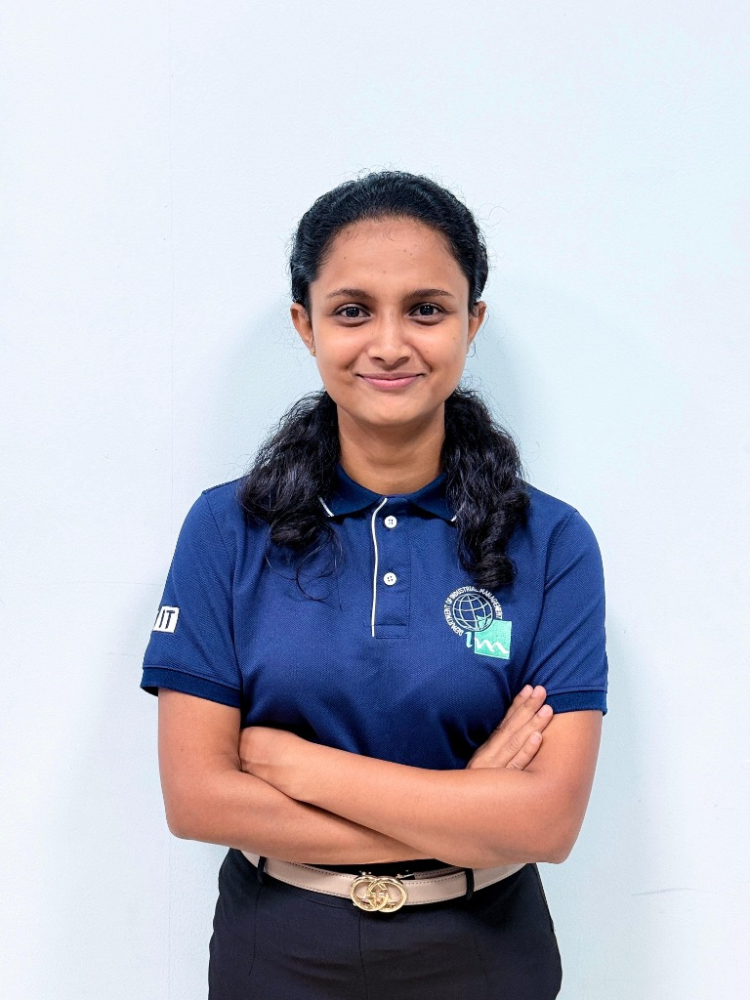

Data Science, AI/ML
& Business Systems
for Impact.
Hi, I'm Imasha Karunathilaka — a 2nd-year BSc (Hons) Management & Information Technology undergraduate at the University of Kelaniya. As a Data Science & AI/ML enthusiast, Business Analyst, and Project Manager, I build predictive machine learning systems, full-stack digital architectures, and data-driven decision platforms that translate business strategy into high-impact execution.

Driven by Purpose, Built on Engineering
I'm a 2nd-year Management and Information Technology undergraduate at the University of Kelaniya, Faculty of Science (Department of Industrial Management), based in Kurunegala, Sri Lanka.
My degree uniquely combines software development, information systems, marketing, and operations management. This background shapes how I approach every project: not just "does it work?", but "does it solve the right business problem?"
I started with no strong programming background and built that up project by project — from UML-modeled systems and full-stack web applications to a 4-month machine learning sales forecasting model on real Walmart retail data, to digitizing manual workflows for an industrial machine repair workshop. Along the way I've gained hands-on experience in React 19, FastAPI, MySQL, Python/ML fundamentals, n8n workflow automation, and Android development.
Career Goals: I am aiming for a Business Analyst, Data Scientist, or Software Development role where I can bridge technical execution with business impact at forward-looking technology companies.
2nd
Year BSc MIT Undergraduate
9+
GitHub Repositories
100%
Business & Tech Alignment
Comprehensive Technical Stack
Exploratory data analysis, time series modeling, feature engineering, and NLP pipelines using Pandas, NumPy, Scikit-Learn.
Modern asynchronous programming, DOM manipulation, Fetch/Axios API integrations, and modular component architecture.
Native Android development in Android Studio, object-oriented design, Coroutines, and Material UI.
Data structures and algorithms, memory management principles, and algorithmic problem-solving.
Semantic markup, responsive grid/flexbox layouts, CSS custom properties, and sleek animations.
Complex relational querying, table joins, schema indexing, transactions, and stored procedure optimization.
Declarative state management, custom hooks, reusable design systems, and lightning-fast Vite bundling.
High-performance async RESTful API design, Pydantic schema validation, and automatic OpenAPI documentation.
Custom design tokens, dark/light theme systems, responsive breakpoint utility styling, and clean UI components.
REST API routing, middleware architecture, database controllers, and backend server development.
Bi-directional WebSocket streaming, live notification broadcasts, and real-time state synchronization.
Stateless token authentication, password hashing (bcrypt), role-based route guards, and Python ORM modeling.
Relational database design, cloud clustering, foreign key integrity, migrations, and performance tuning.
Multi-container application orchestration, reproducible local developer environments, and microservice networking.
Branch workflows, CI/CD pipeline management, resolving cross-team merge conflicts, and collaborative pull requests.
Low-code workflow automation, webhook endpoints, multi-system data synchronization, and automated business triggers.
Native emulator debugging, Gradle builds, Git integrations, and full-stack development toolchains.
Wireframing, UX user journey mapping, marketing collateral, and print-ready brochures.
Data Flow Diagrams (DFD), Sequence Diagrams, Activity Diagrams, Use Case modeling, and Entity-Relationship schemas.
As-Is to To-Be workflow re-engineering, stakeholder requirements gathering, bottleneck identification, and system scoping.
Demand curve forecasting, rolling window statistical features, LightGBM modeling, and retail inventory optimization.
Aspect extraction and fine-grained sentiment scoring on customer reviews across product hardware dimensions.
Sprint backlog planning, user story formulation, cross-functional collaboration, and sprint retrospectives.
Go-To-Market framework formulation, target positioning, market feasibility modeling, and brand launch planning.
My Projects & Case Studies
Click any card to read the in-depth case study & problem breakdown.

Nexora CarbonPulse — Climate & Carbon Decision Suite
Award-winning enterprise climate analytics decision platform forecasting 30-day forward carbon prices across 5 compliance markets, scoring sovereign decarbonization across 50 nations, and calculating EU CBAM border carbon tariff liabilities.

Nexora Carbon Price Forecaster (ML Pipeline)
Benchmarking ARIMA against autoregressive LightGBM regressor models across 15,866 trading days in 5 compliance markets (EU ETS, California, RGGI, UK ETS, China ETS) with strict zero-leakage test horizons.

Nexora EU CBAM Border Carbon Liability Engine
Cross-border regulatory tariff liability simulator quantifying European Union Carbon Border Adjustment Mechanism (EU CBAM) duties across steel, aluminum, cement, and chemical supply chains.
Time Series Sales Forecasting (ML)
Self-driven 4-month predictive analytics project forecasting retail sales using the Kaggle M5 (Walmart) dataset. Built from scratch with comprehensive exploratory data analysis, time-series feature engineering, and model benchmarking.

Industrial Machine Repairing Management System
SDP and BA case study for a heavy-machinery workshop. Replaced a paper-based workflow with digital job intake, live tracking, auto-estimated completion dates, and costing/billing.

Taskify — Task Management System
Full-stack group project featuring real-time Socket.IO notifications, role-based task visibility, and a Stripe-inspired UI redesign across all 8 pages. Managed bug fixes, bcrypt auth, and Tailwind migration.

AquaGrow — Smart Hydroponic Home System
Smart indoor hydroponic home-growing system for INCO 12.0 National Exhibition. Spearheaded complete brand identity, product user grow manuals, brochures, and commercialization strategy.

Ceylink — Digital Tea Marketplace Platform
A digital trade and marketplace platform connecting Sri Lankan tea growers and smallholder sellers directly with buyers, eliminating intermediary exploitation and creating transparent price discovery.

Employee Attrition Analytics & Retention Model
Analyzing enterprise HR workforce data to flag at-risk employees and formulate retention strategies from business case definition to predictive machine learning classification and dashboard design.

TrustSense — Aspect-Based Sentiment Analysis
NLP project extracting granular sentiment by product aspect (battery life, display clarity, build quality, thermal performance) from a self-sourced dataset of 24,113 laptop reviews across 365 products.

Sri Lanka Delivery & Logistics Analytics
Logistics operations analysis examining regional dispatch efficiency, transit delay patterns, route optimization, and operational fulfillment KPIs across Sri Lankan distribution corridors using Python.

NexGen Store — Full-Stack E-Commerce
A full-stack e-commerce application covering product browsing, responsive category filtering, dynamic shopping cart, and secure checkout flows with MySQL database persistence.

AI Support Ticket Triage & SLA Engine
AI support ticket triage and SLA breach prevention engine combining natural language processing, priority scoring, and Agile workflow management to optimize support desk capacity.

WeatherNow — Native Android Weather App
Native Android weather application built in Kotlin leveraging OpenWeather REST APIs, Kotlin Coroutines for asynchronous data streaming, and Material 3 design system.

EventHub — Campus & Tech Community App
Cross-platform mobile application providing seamless event discovery, agenda scheduling, RSVP management, and category filtering for university and developer events.

QuantEdge 1.0 — Financial Analytics Engine
Ongoing quantitative financial analytics engine proudly selected to the Semifinals. Evaluates historical asset prices, moving average momentum, Sharpe ratios, and market risk indicators with Python & Pandas.

QuickBite — Food Ordering Web App
Modern food ordering web application built with TypeScript, featuring item customization, responsive checkout flow, and state-driven shopping cart management.
Academic Foundation
BSc (Hons) in Management and Information Technology
University of Kelaniya — Faculty of Science, Department of Industrial Management
Pursuing a multidisciplinary degree at the intersection of business strategy and software engineering. Currently exploring specialization pathways between Business Systems Engineering and Operations & Supply Chain Management, preparing for a future as a Business Analyst or Data Scientist.
Relevant Academic Coursework
Organizing Roles & Design Leadership
Financial Coordinator — hackX 11.0
IMSSA · Department of Industrial Management, University of Kelaniya
Served on the official Organizing Committee for Sri Lanka's premier inter-university startup hackathon, hackX 11.0. Managed financial budgeting, sponsorship fund allocations, and financial coordination across multiple organizing tracks.
Design, Branding & Marketing Lead — AquaGrow
Team Futurix · INCO 12.0 National Exhibition
Spearheaded complete brand identity (charcoal, mint green, and teal palette), product user grow manuals, gate-fold promotional brochures, social media marketing calendar, and commercialization strategy for INCO 12.0.
IdeaSprint Finalist & Core Strategist — Ceylink
Team Sprintbusters · National Innovation & Entrepreneurship Challenge
Formulated the business venture model, supply chain disintermediation strategy, and digital platform architecture for Ceylink, a digital marketplace empowering Sri Lankan tea sellers and smallholder farmers.
Active Member — LEO Club
LEO Club · University of Kelaniya
Participating actively in community engagement, youth leadership initiatives, organizing humanitarian projects, and voluntary student service drives.
Hackathons & Innovation Challenges
Competitive hackathons, datathons, and ongoing innovation challenges.
SLIIT CODEFEST Datathon
SLIIT Faculty of Computing · National Finals
Awarded the Merit Award at the National Finals of SLIIT CODEFEST Datathon for excellence in predictive analytics, time series exploration, and machine learning model evaluation.
Rootcode Triathlon
Rootcode · Engineering & Innovation Challenge
Ongoing competition — proudly selected to the Semifinals of the prestigious Rootcode Triathlon, tackling intensive software architecture, algorithms, and engineering challenges.
QuantEdge 1.0
FinTech & Quantitative Analytics
Ongoing challenge — successfully advanced as a Semifinalist with QuantEdge 1.0, modeling algorithmic market volatility, Sharpe ratios, and predictive risk indicators.
IdeaSprint 2025
Team Sprintbusters · Ceylink Platform
Advanced as a national Finalist with Team Sprintbusters for Ceylink, a digital marketplace connecting Sri Lankan tea growers directly with buyers.
CodeSprint 11.0
Informatics Institute of Technology (IIT)
Advanced as a national Finalist in Sri Lanka's prestigious inter-university hackathon, tackling complex technical problem solving under time constraints.
INCO 12.0 Exhibition
Team Futurix · AquaGrow Project
Developed and showcased the AquaGrow smart hydroponic home-growing product, presenting brand identity and market feasibility to industry visitors.
NetX IoT Challenge
IoT & Embedded Systems Challenge
Currently competing in the NetX IoT challenge, developing connected smart telemetry and hardware-software system integrations.
Codesplash '26
University Coding Competition
Actively participating in algorithmic problem solving, software system architecture, and collaborative rapid prototyping.
AI Buildathon
Powered by Alibaba Cloud
Building cloud-native generative AI applications and intelligent workflow systems leveraging Alibaba Cloud AI infrastructure.
AI/ML Engineer Stage 1
SLIIT Computing
Professional certification covering core machine learning paradigms, data preprocessing, model evaluation, and Python ML pipelines.
Get In Touch
Collaboration & Inquiries
Interested in collaborating on a software project, machine learning problem, or business analysis role? Feel free to reach out directly.